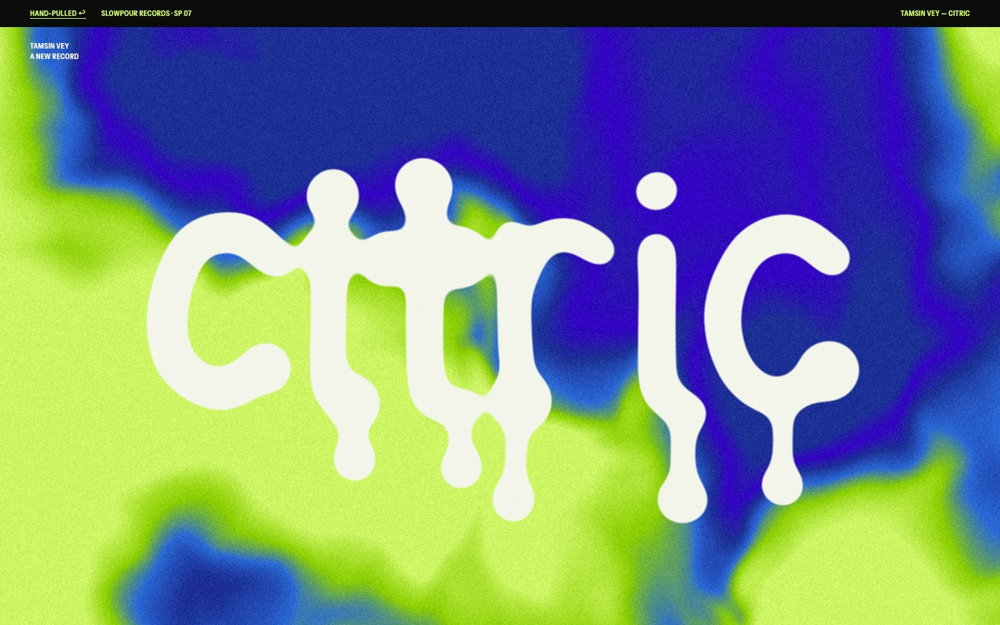
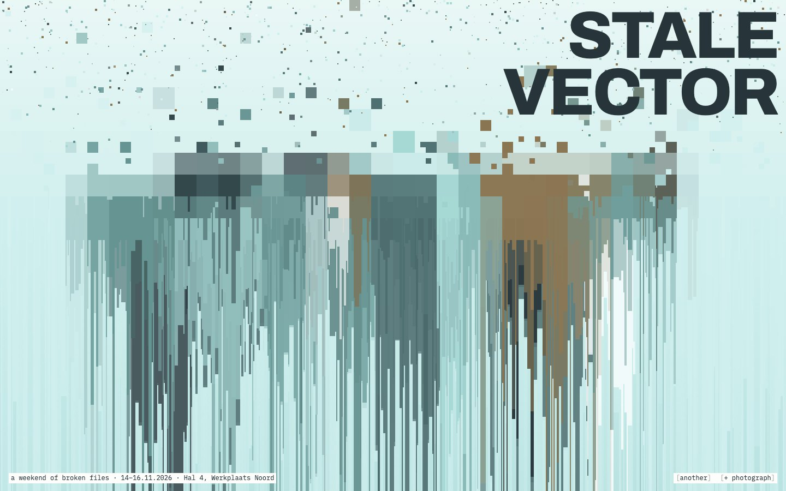
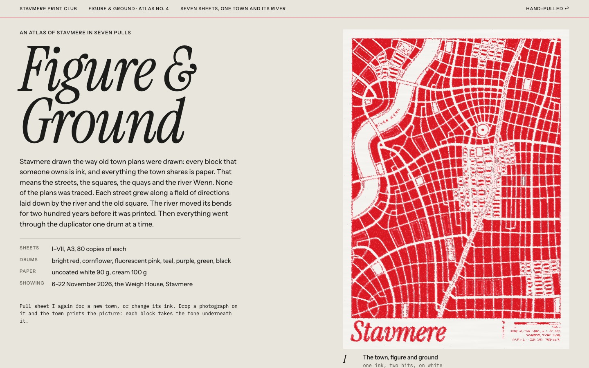
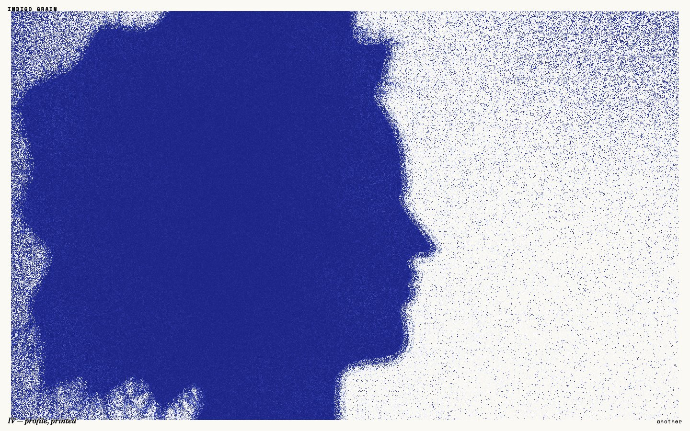
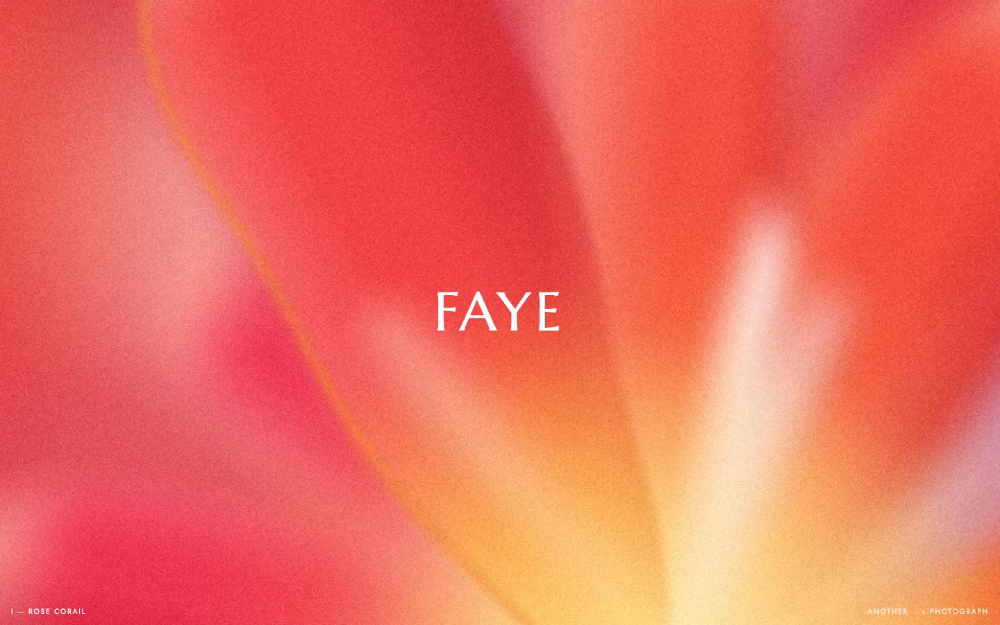
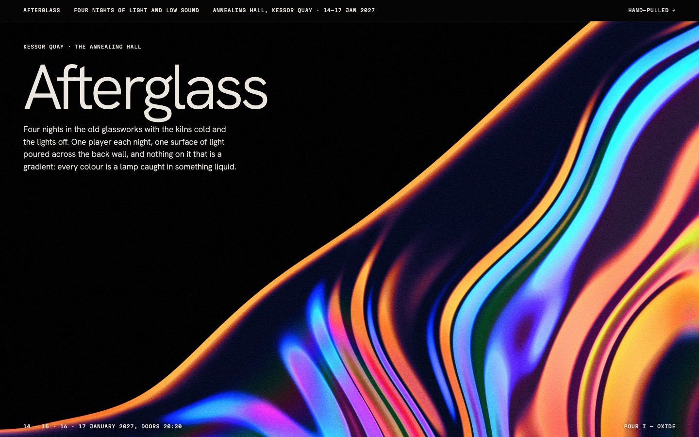
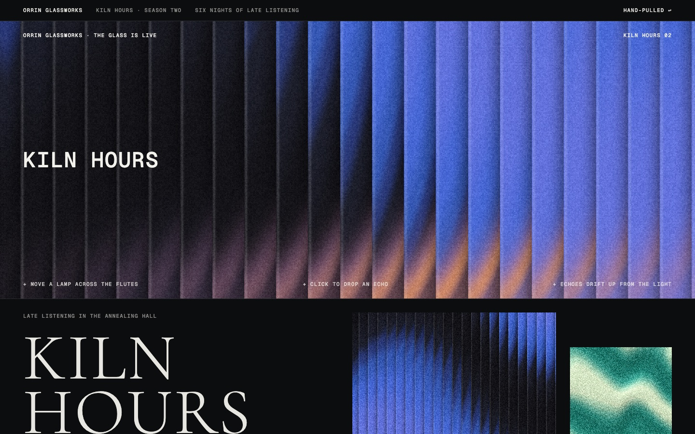

maximalist-boc
Maximalist BOC
the poured record · goo.js + pour.js, 46 kB

open the live page ↗A record rolled out in colour instead of pictures. The cover is acid green and Klein blue poured into each other, and a wall of prints was poured the same way: liquid chrome on black, acid marbling with dark veins, agate, moiré, grain blooms, a watercolour wash, broken video frames. The title is liquid: fat strokes that melt into each other, swell into drops and run off the baseline. Every graphic draws from the same few palettes, so the whole wall reads as one record.
- Colour
- Type
- one alphabet drawn point by point and melted four ways: blob, drip, glow, echo; Instrument Sans, narrowed, for every typed fact
- Made of
- noise warped by noise, solved once and read thirteen ways, from chrome to datamosh
- nine palettes read off the board, the only inks the graphics use
- letters that condense out of a puddle, or your own photo poured like paint
- Refuses
- bubble fonts and
text-shadowglow - colour cards as decoration, mesh gradients, glass
- real artists’ names, faces or typefaces
- bubble fonts and
pixelsort-glitch
Pixel-sort glitch
the broken file · glitch.js + pixelsort.js, 67 kB

open the live page ↗Seven plates, each made by doing to one picture what a machine does. A slit drags its rows into smears, and a sort slides the light pixels to one end. A wave pushes the rows into moiré. A codec drops its motion vectors, and the columns drip. A screen hits the floor. A layout cuts the picture into pieces. A sheet moves in the scanner, and type is sliced as it prints. Every mark comes from the picture underneath, so it reads as broken, not decorated.
- Colour
- Type
- IBM Plex Mono for everything small, Archivo 800 in lowercase for anything large
- Made of
- slit-scan rows and interval-sorted runs
- sine and noise pushes, macroblocks, cracks, a scanner’s split colour lines
- a coast at dusk drawn in code, or your own photo, dropped in
- Refuses
- RGB-split
text-shadowon headings - glitch that ignores the picture under it
- soft pixels, glow, synthwave grids
- RGB-split
riso-cartography
Risograph cartography
the duplicator · riso.js + cartography.js + atlas.js, 85 kB

open the live page ↗A risograph pushes one translucent ink at a time through a stencil onto uncoated paper. So you never pick a fill colour: you pick a drum, and white is where it has no ink. That makes it a natural press for the figure-ground town plan: the blocks are ink, and the streets, squares and river are the paper left between them. The engine grows a town along a field of street directions and lets its river migrate for two hundred years. Then it prints seven sheets. The town appears in solid red, in blue washes, in pink footprints and in teal hatching. Around it sit a river with all its old courses, a pastel zoning plan, and a walk poster in huge type over a green valley.
- Inks
- Type
- Instrument Serif italic for titles, Instrument Sans for huge poster words and small caps, Plex Mono for map labels and typed notes
- Made of
- per-drum masters, grain screens, multiply overprint
- misregistration, drum mottle, starved specks
- streets grown from a tensor field, blocks labelled one by one, a river that migrates
- Refuses
- a traced city, a spider-web grid, a sine-wave river
- white fills where paper should show
- a fourth ink, perfect registration
indigo-grain
Indigo grain
the blue board · cyanotype.js + botanica.js, 83 kB

open the live page ↗A blue mood board, made in the page. Light forms rise out of navy-black, butterflies blur as they move, lilies lie on the paper as photograms, and photographs are sun-printed until the highlights burn out and the brushed edge shows. There is marbled paper, ink spray, a halftone under a loupe, and two posters with small type. Every speck is a colour from one ramp, so the hue never drifts.
- Tones
- Type
- Fraunces italic for sheet names, Space Mono for the controls, Archivo in small caps on the posters only
- Made of
- grain as a shift along the colour ramp, never RGB noise
- masks blurred at several depths and smeared where things moved
- marbling solved backward stroke by stroke, sun prints with brushed edges
- Refuses
- a smooth mesh gradient with noise on top
- clip-art butterflies, radially symmetric flowers
- a blue tint passed off as a sun print
ethereal-haze
Ethereal haze
the warm soft-focus print · haze.js, 44 kB

open the live page ↗Warm colour that the lens and the print could not keep still. It shows the inside of a flower held too close to focus, coral and vermilion grain fields whose soft edges break into spray, and a ribbon of colour turning over cream paper. There is also satin under one light and a meadow going past a train window. The blur fits the subject: a disc for a lens, a line for a shutter. The grain goes on last. One small serif word sits in the middle.
- Six engines
- Type
- one thin serif (Marcellus) for the word on each image and the card titles; Jost for the tiny lines, hex labels and captions
- Made of
- every soft edge sprayed to stipple, then midtone grain, per device pixel
- disc defocus at two depths for flowers, line blur for the meadow
- ribbons with a crisp side and a soft side that swap at each twist; your photo, developed
- Refuses
- smooth mesh gradients, with or without noise on top
- pastel on white, and blobs drifting behind a hero
- more than one word on an image
chrome-aurora
Chrome aurora
liquid light on black · mercury.js, 44 kB

open the live page ↗Light caught in something liquid, on black. A pool of mercury takes a warm lamp on one side and a cool one on the other, with oil-film colour only in its fold. Paint trails drag across charcoal with a crisp front and a smeared tail. Glossy swirls carry one hot colour. Strip lights on wet glass split into warm and cool fringes, and aurora light sits out of focus. Each surface is a height field shaded per pixel, then grained. Tiny mono type sits in the corners, never in the chrome.
- Lamps
- Type
- Hanken Grotesk 300 for the display word and the reading text; Martian Mono in small caps for the masthead, captions and poster corners
- Made of
- height fields lit by a warm and a cool lamp, with thin-film colour from the CIE matching functions
- trails as paint, with a crisp front and a tail on one side
- a per-channel lens offset, and grain as the last pass; WebGL with a 2D fallback
- Refuses
- chrome or liquid-metal lettering, and gradient-filled text
- a mesh gradient or drifting blobs standing in for a lit surface
- a rainbow sweep over everything, neon lightning, glassmorphism cards
abstract-texture
Abstract texture
the surface is the picture · surface.js, 57 kB

open the live page ↗Posters where the texture is the subject. One soft field of colour is seen through one or two panes. Fluted glass steps every edge behind it, and satin and marbling fold by a warp of a warp. There are aurora curtains in heavy grain, rows of colour dragged until they tear, flowers smeared by a slow shutter, and a dithered orb on grey stock. The field is soft by construction and the panes are sharp, so any palette or dropped photograph goes through any surface. The type is small and set last.
- Fields
- Type
- Cormorant Garamond 300 in capitals for titles; Geist for reading and the one heavy word; Geist Mono for the small type on the posters
- Made of
- a field computed small and scaled up, and panes run at full size
- reeds as cylinder lenses, and streaks as drag along a row, on one side only
- coloured midtone grain, dithered so nothing bands
- Refuses
- a smooth gradient with a noise PNG blended on top
- reeds drawn as stripes, and blur standing in for motion
- big type on the poster
Put them in a session
# in Claude Code: add this repository as a plugin marketplace, then install /plugin marketplace add florispenninckx/hand-pulled /plugin install hand-pulled@hand-pulled # or take one style only git clone https://github.com/florispenninckx/hand-pulled cp -r hand-pulled/skills/riso-cartography ~/.claude/skills/
- Ask for the page in plain words: “the site for my ceramics studio, printed like a two-colour riso poster”. Claude picks the skill by its description.
- The skill tells Claude to read its reference page first, copy the engine into your project, and build with the process.
- Each brief ends in a checklist that Claude runs against a real screenshot before it calls the work done.